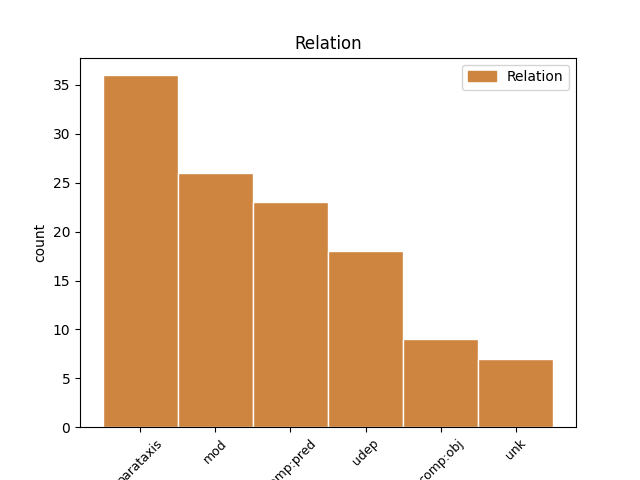

Distribution of features within this leaf


Agreement Rules sorted by frequency.
- When the dependent token is the parataxis(parataxis) of the head token, and the dependent token is VERB.
1 ב _ _ _ _ 0 _ _ _
2 ראשל"ץ _ _ _ _ 0 _ _ _
3 היו _ AUX AUX Gender=Fem,Masc|Number=Plur|Person=3|Polarity=Pos|Tense=Past|VerbType=Cop 0 _ _ _
4 כולם _ _ _ _ 0 _ _ _
5 ב _ _ _ _ 0 _ _ _
6 מיטב_ _ _ _ _ 0 _ _ _
7 _של_ _ _ _ _ 0 _ _ _
8 _הם _ _ _ _ 0 _ _ _
9 : _ _ _ _ 0 _ _ _
10 ארבעה _ _ _ _ 0 _ _ _
11 שחקנים _ _ _ _ 0 _ _ _
12 קלעו קלע VERB VERB Gender=Fem,Masc|HebBinyan=PAAL|Number=Plur|Person=3|Tense=Past|Voice=Act 3 parataxis _ _
13 נהדר _ _ _ _ 0 _ _ _
14 ( _ _ _ _ 0 _ _ _
15 זלוטיקמן _ _ _ _ 0 _ _ _
16 18 _ _ _ _ 0 _ _ _
17 , _ _ _ _ 0 _ _ _
18 ספנסר _ _ _ _ 0 _ _ _
19 19 _ _ _ _ 0 _ _ _
20 , _ _ _ _ 0 _ _ _
21 בנקס _ _ _ _ 0 _ _ _
22 24 _ _ _ _ 0 _ _ _
23 , _ _ _ _ 0 _ _ _
24 ברקוביץ _ _ _ _ 0 _ _ _
25 28 _ _ _ _ 0 _ _ _
26 ) _ _ _ _ 0 _ _ _
27 ו _ _ _ _ 0 _ _ _
28 ה _ _ _ _ 0 _ _ _
29 רכז _ _ _ _ 0 _ _ _
30 בוסאני _ _ _ _ 0 _ _ _
31 ניווט _ _ _ _ 0 _ _ _
32 כהלכה _ _ _ _ 0 _ _ _
33 את _ _ _ _ 0 _ _ _
34 קבוצה_ _ _ _ _ 0 _ _ _
35 _של_ _ _ _ _ 0 _ _ _
36 _הוא _ _ _ _ 0 _ _ _
37 ו _ _ _ _ 0 _ _ _
38 הוסיף _ _ _ _ 0 _ _ _
39 12 _ _ _ _ 0 _ _ _
40 נקודות _ _ _ _ 0 _ _ _
41 ( _ _ _ _ 0 _ _ _
42 שלוש _ _ _ _ 0 _ _ _
43 שלשות _ _ _ _ 0 _ _ _
44 ) _ _ _ _ 0 _ _ _
45 . _ _ _ _ 0 _ _ _
1 אילנה _ _ _ _ 0 _ _ _
2 נחום _ _ _ _ 0 _ _ _
3 , _ _ _ _ 0 _ _ _
4 ה _ _ _ _ 0 _ _ _
5 מזכירה _ _ _ _ 0 _ _ _
6 של _ _ _ _ 0 _ _ _
7 קיבוץ _ _ _ _ 0 _ _ _
8 רוחמה _ _ _ _ 0 _ _ _
9 , _ _ _ _ 0 _ _ _
10 אומרת _ _ _ _ 0 _ _ _
11 ב _ _ _ _ 0 _ _ _
12 כנות _ _ _ _ 0 _ _ _
13 : _ _ _ _ 0 _ _ _
14 " _ _ _ _ 0 _ _ _
15 אפילו _ _ _ _ 0 _ _ _
16 רצו רצה VERB VERB Gender=Fem,Masc|HebBinyan=PAAL|Number=Plur|Person=3|Tense=Past|Voice=Act 26 mod _ _
17 בני _ _ _ _ 0 _ _ _
18 ה _ _ _ _ 0 _ _ _
19 זוג _ _ _ _ 0 _ _ _
20 קונסטנטינסקו _ _ _ _ 0 _ _ _
21 להישאר _ _ _ _ 0 _ _ _
22 ב _ _ _ _ 0 _ _ _
23 ה_ _ _ _ _ 0 _ _ _
24 קיבוץ _ _ _ _ 0 _ _ _
25 , _ _ _ _ 0 _ _ _
26 הייתי היה AUX AUX Gender=Fem,Masc|Number=Sing|Person=1|Polarity=Pos|Tense=Past|VerbType=Cop 0 _ _ _
27 עושה _ _ _ _ 0 _ _ _
28 הכל _ _ _ _ 0 _ _ _
29 כדי _ _ _ _ 0 _ _ _
30 ש _ _ _ _ 0 _ _ _
31 לא _ _ _ _ 0 _ _ _
32 יישארו _ _ _ _ 0 _ _ _
33 . _ _ _ _ 0 _ _ _
1 אמש _ _ _ _ 0 _ _ _
2 ב _ _ _ _ 0 _ _ _
3 אוסישקין _ _ _ _ 0 _ _ _
4 הרגשתי הרגיש VERB VERB Gender=Fem,Masc|HebBinyan=HIFIL|Number=Sing|Person=1|Tense=Past|Voice=Act 0 _ _ _
5 כאילו _ _ _ _ 0 _ _ _
6 חזרנו חזר VERB VERB Gender=Fem,Masc|Number=Plur|Person=1|Tense=Past 4 udep _ _
7 ל _ _ _ _ 0 _ _ _
8 סאברס _ _ _ _ 0 _ _ _
9 . _ _ _ _ 0 _ _ _
1 עם _ _ _ _ 0 _ _ _
2 זאת _ _ _ _ 0 _ _ _
3 , _ _ _ _ 0 _ _ _
4 אילו _ _ _ _ 0 _ _ _
5 אפשר _ _ _ _ 0 _ _ _
6 היה _ AUX AUX Gender=Masc|Number=Sing|Person=3|Polarity=Pos|Tense=Past|VerbType=Cop 13 comp:pred _ _
7 לנצח _ _ _ _ 0 _ _ _
8 מלחמה _ _ _ _ 0 _ _ _
9 ב _ _ _ _ 0 _ _ _
10 התלהבות _ _ _ _ 0 _ _ _
11 בלבד _ _ _ _ 0 _ _ _
12 , _ _ _ _ 0 _ _ _
13 היו _ AUX AUX Gender=Fem,Masc|Number=Plur|Person=3|Polarity=Pos|Tense=Past|VerbType=Cop 0 _ _ _
14 ה _ _ _ _ 0 _ _ _
15 מתנדבים _ _ _ _ 0 _ _ _
16 הללו _ _ _ _ 0 _ _ _
17 כבר _ _ _ _ 0 _ _ _
18 עכשיו _ _ _ _ 0 _ _ _
19 ב _ _ _ _ 0 _ _ _
20 כוויית _ _ _ _ 0 _ _ _
21 סיטי _ _ _ _ 0 _ _ _
22 . _ _ _ _ 0 _ _ _
1 " _ _ _ _ 0 _ _ _
2 לא _ _ _ _ 0 _ _ _
3 ידעתי ידע VERB VERB Gender=Fem,Masc|Number=Sing|Person=1|Tense=Past 0 _ _ _
4 דבר _ _ _ _ 0 _ _ _
5 על _ _ _ _ 0 _ _ _
6 ה _ _ _ _ 0 _ _ _
7 קיבוץ _ _ _ _ 0 _ _ _
8 " _ _ _ _ 0 _ _ _
9 , _ _ _ _ 0 _ _ _
10 אומרת _ _ _ _ 0 _ _ _
11 סילביה _ _ _ _ 0 _ _ _
12 ( _ _ _ _ 0 _ _ _
13 33 _ _ _ _ 0 _ _ _
14 ) _ _ _ _ 0 _ _ _
15 , _ _ _ _ 0 _ _ _
16 " _ _ _ _ 0 _ _ _
17 אבל _ _ _ _ 0 _ _ _
18 ה _ _ _ _ 0 _ _ _
19 דימוי _ _ _ _ 0 _ _ _
20 היה היה AUX AUX Gender=Masc|Number=Sing|Person=3|Polarity=Pos|Tense=Past|VerbType=Cop 3 parataxis _ _
21 שונה _ _ _ _ 0 _ _ _
22 לחלוטין _ _ _ _ 0 _ _ _
23 . _ _ _ _ 0 _ _ _
1 הגיע הגיע VERB VERB Gender=Masc|HebBinyan=HIFIL|Number=Sing|Person=3|Tense=Past|Voice=Act 10 comp:obj _ _
2 ה _ _ _ _ 0 _ _ _
3 זמן _ _ _ _ 0 _ _ _
4 להתגייס _ _ _ _ 0 _ _ _
5 ל _ _ _ _ 0 _ _ _
6 ה_ _ _ _ _ 0 _ _ _
7 צבא _ _ _ _ 0 _ _ _
8 " _ _ _ _ 0 _ _ _
9 , _ _ _ _ 0 _ _ _
10 נאמר נאמר VERB VERB Gender=Masc|HebBinyan=NIFAL|Number=Sing|Person=3|Tense=Past|Voice=Mid 0 _ _ _
11 ב _ _ _ _ 0 _ _ _
12 אחד _ _ _ _ 0 _ _ _
13 ה _ _ _ _ 0 _ _ _
14 שירים _ _ _ _ 0 _ _ _
15 . _ _ _ _ 0 _ _ _
1 לפני _ _ _ _ 0 _ _ _
2 ש _ _ _ _ 0 _ _ _
3 חזר _ _ _ _ 0 _ _ _
4 ל _ _ _ _ 0 _ _ _
5 ה_ _ _ _ _ 0 _ _ _
6 ארץ _ _ _ _ 0 _ _ _
7 ב _ _ _ _ 0 _ _ _
8 1985 _ _ _ _ 0 _ _ _
9 היה היה AUX AUX Gender=Masc|Number=Sing|Person=3|Polarity=Pos|Tense=Past|VerbType=Cop 0 _ _ _
10 ברנע _ _ _ _ 0 _ _ _
11 סגן _ _ _ _ 0 _ _ _
12 פרופסור _ _ _ _ 0 _ _ _
13 ל _ _ _ _ 0 _ _ _
14 אנדוקרינולוגיה _ _ _ _ 0 _ _ _
15 ב _ _ _ _ 0 _ _ _
16 אוניברסיטת _ _ _ _ 0 _ _ _
17 ייל _ _ _ _ 0 _ _ _
18 ש _ _ _ _ 0 _ _ _
19 ב _ _ _ _ 0 _ _ _
20 ארה"ב _ _ _ _ 0 _ _ _
21 ו _ _ _ _ 0 _ _ _
22 השתתף השתתף VERB VERB Gender=Masc|HebBinyan=HITPAEL|Number=Sing|Person=3|Tense=Past 9 comp:pred _ _
23 ב _ _ _ _ 0 _ _ _
24 ה_ _ _ _ _ 0 _ _ _
25 עבודות _ _ _ _ 0 _ _ _
26 ה _ _ _ _ 0 _ _ _
27 ראשונות _ _ _ _ 0 _ _ _
28 ב _ _ _ _ 0 _ _ _
29 הפריית _ _ _ _ 0 _ _ _
30 מבחנה _ _ _ _ 0 _ _ _
31 שם _ _ _ _ 0 _ _ _
32 . _ _ _ _ 0 _ _ _
1 הם _ _ _ _ 0 _ _ _
2 היו _ AUX AUX Gender=Fem,Masc|Number=Plur|Person=3|Polarity=Pos|Tense=Past|VerbType=Cop 30 mod _ _
3 פצועים _ _ _ _ 0 _ _ _
4 כבר _ _ _ _ 0 _ _ _
5 ב _ _ _ _ 0 _ _ _
6 ה_ _ _ _ _ 0 _ _ _
7 שבוע _ _ _ _ 0 _ _ _
8 ש _ _ _ _ 0 _ _ _
9 עבר _ _ _ _ 0 _ _ _
10 , _ _ _ _ 0 _ _ _
11 אך _ _ _ _ 0 _ _ _
12 שיחקו _ _ _ _ 0 _ _ _
13 ב _ _ _ _ 0 _ _ _
14 סוף _ _ _ _ 0 _ _ _
15 ה _ _ _ _ 0 _ _ _
16 שבוע _ _ _ _ 0 _ _ _
17 ו _ _ _ _ 0 _ _ _
18 אף _ _ _ _ 0 _ _ _
19 אחד _ _ _ _ 0 _ _ _
20 מ _ _ _ _ 0 _ _ _
21 ה _ _ _ _ 0 _ _ _
22 שלושה _ _ _ _ 0 _ _ _
23 לא _ _ _ _ 0 _ _ _
24 סיים _ _ _ _ 0 _ _ _
25 את _ _ _ _ 0 _ _ _
26 ה _ _ _ _ 0 _ _ _
27 משחק _ _ _ _ 0 _ _ _
28 " _ _ _ _ 0 _ _ _
29 , _ _ _ _ 0 _ _ _
30 אמר אמר VERB VERB Gender=Masc|HebBinyan=PAAL|Number=Sing|Person=3|Tense=Past|Voice=Act 0 _ _ _
31 גדעון _ _ _ _ 0 _ _ _
32 כהן _ _ _ _ 0 _ _ _
33 . _ _ _ _ 0 _ _ _
1 מומחים _ _ _ _ 0 _ _ _
2 אחרים _ _ _ _ 0 _ _ _
3 סבורים _ _ _ _ 0 _ _ _
4 כי _ _ _ _ 0 _ _ _
5 ה _ _ _ _ 0 _ _ _
6 סיבה _ _ _ _ 0 _ _ _
7 פשוטה _ _ _ _ 0 _ _ _
8 יותר _ _ _ _ 0 _ _ _
9 : _ _ _ _ 0 _ _ _
10 אם _ _ _ _ 0 _ _ _
11 יוזרמו הוזרם VERB VERB Gender=Fem,Masc|HebBinyan=HUFAL|Number=Plur|Person=3|Tense=Fut|Voice=Pass 0 _ _ _
12 כוחות _ _ _ _ 0 _ _ _
13 גדולים _ _ _ _ 0 _ _ _
14 כל _ _ _ _ 0 _ _ _
15 - _ _ _ _ 0 _ _ _
16 כך _ _ _ _ 0 _ _ _
17 ל _ _ _ _ 0 _ _ _
18 ה_ _ _ _ _ 0 _ _ _
19 מפרץ _ _ _ _ 0 _ _ _
20 , _ _ _ _ 0 _ _ _
21 לא _ _ _ _ 0 _ _ _
22 יימצאו נמצא VERB VERB Gender=Fem,Masc|HebBinyan=NIFAL|HebSource=ConvUncertainHead|Number=Plur|Person=3|Tense=Fut|Voice=Mid 11 unk _ _
23 כוחות _ _ _ _ 0 _ _ _
24 מספיקים _ _ _ _ 0 _ _ _
25 ב _ _ _ _ 0 _ _ _
26 ה_ _ _ _ _ 0 _ _ _
27 עורף _ _ _ _ 0 _ _ _
28 כדי _ _ _ _ 0 _ _ _
29 להחליף _ _ _ _ 0 _ _ _
30 את _ _ _ _ 0 _ _ _
31 אלה _ _ _ _ 0 _ _ _
32 ש _ _ _ _ 0 _ _ _
33 ב _ _ _ _ 0 _ _ _
34 ה_ _ _ _ _ 0 _ _ _
35 חזית _ _ _ _ 0 _ _ _
36 . _ _ _ _ 0 _ _ _
1 ה _ _ _ _ 0 _ _ _
2 מינהל _ _ _ _ 0 _ _ _
3 יקבע קבע VERB VERB Gender=Masc|Number=Sing|Person=3|Tense=Fut 0 _ _ _
4 מי _ _ _ _ 0 _ _ _
5 יהיו היה AUX AUX Gender=Fem,Masc|Number=Plur|Person=3|Polarity=Pos|Tense=Fut|VerbType=Cop 3 udep _ _
6 ה _ _ _ _ 0 _ _ _
7 קבלנים _ _ _ _ 0 _ _ _
8 ש _ _ _ _ 0 _ _ _
9 עם_ _ _ _ _ 0 _ _ _
10 _הם _ _ _ _ 0 _ _ _
11 יתקשר _ _ _ _ 0 _ _ _
12 משרד _ _ _ _ 0 _ _ _
13 ה _ _ _ _ 0 _ _ _
14 בינוי _ _ _ _ 0 _ _ _
15 ו _ _ _ _ 0 _ _ _
16 ה _ _ _ _ 0 _ _ _
17 שיכון _ _ _ _ 0 _ _ _
18 , _ _ _ _ 0 _ _ _
19 ו _ _ _ _ 0 _ _ _
20 כן _ _ _ _ 0 _ _ _
21 את _ _ _ _ 0 _ _ _
22 אמות _ _ _ _ 0 _ _ _
23 - _ _ _ _ 0 _ _ _
24 ה _ _ _ _ 0 _ _ _
25 מידה _ _ _ _ 0 _ _ _
26 ש _ _ _ _ 0 _ _ _
27 ב _ _ _ _ 0 _ _ _
28 עזרה_ _ _ _ _ 0 _ _ _
29 _של_ _ _ _ _ 0 _ _ _
30 _הן _ _ _ _ 0 _ _ _
31 יבחרו _ _ _ _ 0 _ _ _
32 את _ _ _ _ 0 _ _ _
33 ה _ _ _ _ 0 _ _ _
34 קבלנים _ _ _ _ 0 _ _ _
35 הללו _ _ _ _ 0 _ _ _
36 . _ _ _ _ 0 _ _ _
1 לוי _ _ _ _ 0 _ _ _
2 זעם _ _ _ _ 0 _ _ _
3 ו _ _ _ _ 0 _ _ _
4 קרא _ _ _ _ 0 _ _ _
5 ב _ _ _ _ 0 _ _ _
6 קול _ _ _ _ 0 _ _ _
7 " _ _ _ _ 0 _ _ _
8 אם _ _ _ _ 0 _ _ _
9 תגעו נגע VERB VERB Gender=Fem,Masc|HebBinyan=PAAL|Number=Plur|Person=2|Tense=Fut|Voice=Act 0 _ _ _
10 ב _ _ _ _ 0 _ _ _
11 סלוצקי _ _ _ _ 0 _ _ _
12 תהיה היה AUX AUX Gender=Fem|HebSource=ConvUncertainHead|Number=Sing|Person=3|Polarity=Pos|Tense=Fut|VerbType=Cop 9 unk _ _
13 מלחמת _ _ _ _ 0 _ _ _
14 עולם _ _ _ _ 0 _ _ _
15 " _ _ _ _ 0 _ _ _
16 . _ _ _ _ 0 _ _ _
1 ל _ _ _ _ 0 _ _ _
2 , _ _ _ _ 0 _ _ _
3 יו"ר _ _ _ _ 0 _ _ _
4 ה _ _ _ _ 0 _ _ _
5 מושב _ _ _ _ 0 _ _ _
6 ב_ _ _ _ _ 0 _ _ _
7 _הוא _ _ _ _ 0 _ _ _
8 הירצו _ _ _ _ 0 _ _ _
9 קיסר _ _ _ _ 0 _ _ _
10 , _ _ _ _ 0 _ _ _
11 ו _ _ _ _ 0 _ _ _
12 שר _ _ _ _ 0 _ _ _
13 ה _ _ _ _ 0 _ _ _
14 אוצר _ _ _ _ 0 _ _ _
15 , _ _ _ _ 0 _ _ _
16 אמר אמר VERB VERB Gender=Masc|HebBinyan=PAAL|Number=Sing|Person=3|Tense=Past|Voice=Act 0 _ _ _
17 קיסר _ _ _ _ 0 _ _ _
18 : _ _ _ _ 0 _ _ _
19 " _ _ _ _ 0 _ _ _
20 מר _ _ _ _ 0 _ _ _
21 אורי _ _ _ _ 0 _ _ _
22 , _ _ _ _ 0 _ _ _
23 או _ _ _ _ 0 _ _ _
24 ה _ _ _ _ 0 _ _ _
25 חבר _ _ _ _ 0 _ _ _
26 אורי _ _ _ _ 0 _ _ _
27 , _ _ _ _ 0 _ _ _
28 אם _ _ _ _ 0 _ _ _
29 היית _ _ _ _ 0 _ _ _
30 חבר _ _ _ _ 0 _ _ _
31 ב _ _ _ _ 0 _ _ _
32 ה_ _ _ _ _ 0 _ _ _
33 הסתדרות _ _ _ _ 0 _ _ _
34 הייתי היה AUX AUX Gender=Fem,Masc|Number=Sing|Person=1|Polarity=Pos|Tense=Past|VerbType=Cop 16 comp:obj _ _
35 מקבל _ _ _ _ 0 _ _ _
36 מן_ _ _ _ _ 0 _ _ _
37 _אתה _ _ _ _ 0 _ _ _
38 מס _ _ _ _ 0 _ _ _
39 אחיד _ _ _ _ 0 _ _ _
40 גבוה _ _ _ _ 0 _ _ _
41 . _ _ _ _ 0 _ _ _
Disagree Examples:
1 מ _ _ _ _ 0 _ _ _
2 ה _ _ _ _ 0 _ _ _
3 קהל _ _ _ _ 0 _ _ _
4 נשמעו נשמע VERB VERB Gender=Fem,Masc|HebBinyan=NIFAL|Number=Plur|Person=3|Tense=Past|Voice=Mid 0 _ _ _
5 קריאות _ _ _ _ 0 _ _ _
6 : _ _ _ _ 0 _ _ _
7 אחרי _ _ _ _ 0 _ _ _
8 ה _ _ _ _ 0 _ _ _
9 הלווייה _ _ _ _ 0 _ _ _
10 נלך הלך VERB VERB Gender=Fem,Masc|HebBinyan=PAAL|Number=Plur|Person=1|Tense=Fut|Voice=Act 4 parataxis _ _
11 לשחרר _ _ _ _ 0 _ _ _
12 את _ _ _ _ 0 _ _ _
13 הר _ _ _ _ 0 _ _ _
14 ה _ _ _ _ 0 _ _ _
15 בית _ _ _ _ 0 _ _ _
16 . _ _ _ _ 0 _ _ _
1 עוד _ _ _ _ 0 _ _ _
2 בטרם _ _ _ _ 0 _ _ _
3 ה _ _ _ _ 0 _ _ _
4 לוויה _ _ _ _ 0 _ _ _
5 אמר אמר VERB VERB Gender=Masc|HebBinyan=PAAL|Number=Sing|Person=3|Tense=Past|Voice=Act 0 _ _ _
6 אחד _ _ _ _ 0 _ _ _
7 מ _ _ _ _ 0 _ _ _
8 ראשי _ _ _ _ 0 _ _ _
9 ה _ _ _ _ 0 _ _ _
10 תנועה _ _ _ _ 0 _ _ _
11 , _ _ _ _ 0 _ _ _
12 טירן _ _ _ _ 0 _ _ _
13 פולק _ _ _ _ 0 _ _ _
14 : _ _ _ _ 0 _ _ _
15 " _ _ _ _ 0 _ _ _
16 זה _ _ _ _ 0 _ _ _
17 לא _ _ _ _ 0 _ _ _
18 יעבור עבר VERB VERB Gender=Masc|HebBinyan=PAAL|Number=Sing|Person=3|Tense=Fut|Voice=Act 5 comp:obj _ _
19 ב _ _ _ _ 0 _ _ _
20 שקט _ _ _ _ 0 _ _ _
21 , _ _ _ _ 0 _ _ _
22 ו _ _ _ _ 0 _ _ _
23 אסור _ _ _ _ 0 _ _ _
24 ש _ _ _ _ 0 _ _ _
25 זה _ _ _ _ 0 _ _ _
26 יעבור _ _ _ _ 0 _ _ _
27 ב _ _ _ _ 0 _ _ _
28 שקט _ _ _ _ 0 _ _ _
29 . _ _ _ _ 0 _ _ _
1 הרגשתי הרגיש VERB VERB Gender=Fem,Masc|HebBinyan=HIFIL|Number=Sing|Person=1|Tense=Past|Voice=Act 0 _ _ _
2 שמח _ _ _ _ 0 _ _ _
3 ש _ _ _ _ 0 _ _ _
4 יש _ _ _ _ 0 _ _ _
5 ל_ _ _ _ _ 0 _ _ _
6 _אנחנו _ _ _ _ 0 _ _ _
7 מדינה _ _ _ _ 0 _ _ _
8 ו _ _ _ _ 0 _ _ _
9 מקום _ _ _ _ 0 _ _ _
10 לחיות _ _ _ _ 0 _ _ _
11 ב_ _ _ _ _ 0 _ _ _
12 _הוא _ _ _ _ 0 _ _ _
13 : _ _ _ _ 0 _ _ _
14 כן _ _ _ _ 0 _ _ _
15 , _ _ _ _ 0 _ _ _
16 " _ _ _ _ 0 _ _ _
17 יהיה היה VERB VERB Gender=Masc|HebExistential=True|Number=Sing|Person=3|Polarity=Pos|Tense=Fut 1 parataxis _ _
18 מה _ _ _ _ 0 _ _ _
19 ש _ _ _ _ 0 _ _ _
20 יהיה _ _ _ _ 0 _ _ _
21 " _ _ _ _ 0 _ _ _
22 אני _ _ _ _ 0 _ _ _
23 נשאר _ _ _ _ 0 _ _ _
24 כאן _ _ _ _ 0 _ _ _
25 . _ _ _ _ 0 _ _ _
1 על _ _ _ _ 0 _ _ _
2 כך _ _ _ _ 0 _ _ _
3 אפשר _ _ _ _ 0 _ _ _
4 היה היה AUX AUX Gender=Masc|Number=Sing|Person=3|Polarity=Pos|Tense=Past|VerbType=Cop 0 _ _ _
5 לומר _ _ _ _ 0 _ _ _
6 : _ _ _ _ 0 _ _ _
7 מי _ _ _ _ 0 _ _ _
8 אם _ _ _ _ 0 _ _ _
9 לא _ _ _ _ 0 _ _ _
10 חבורה _ _ _ _ 0 _ _ _
11 של _ _ _ _ 0 _ _ _
12 שוודים _ _ _ _ 0 _ _ _
13 זקנים _ _ _ _ 0 _ _ _
14 יחליט החליט VERB VERB Gender=Masc|HebBinyan=HIFIL|Number=Sing|Person=3|Tense=Fut|Voice=Act 4 mod _ _
15 ב _ _ _ _ 0 _ _ _
16 עניין _ _ _ _ 0 _ _ _
17 זה _ _ _ _ 0 _ _ _
18 ? _ _ _ _ 0 _ _ _
1 מארק _ _ _ _ 0 _ _ _
2 , _ _ _ _ 0 _ _ _
3 ש _ _ _ _ 0 _ _ _
4 לא _ _ _ _ 0 _ _ _
5 דיבר _ _ _ _ 0 _ _ _
6 גרמנית _ _ _ _ 0 _ _ _
7 , _ _ _ _ 0 _ _ _
8 אמר אמר VERB VERB Gender=Masc|HebBinyan=PAAL|Number=Sing|Person=3|Tense=Past|Voice=Act 0 _ _ _
9 ל _ _ _ _ 0 _ _ _
10 ה_ _ _ _ _ 0 _ _ _
11 מתורגמן _ _ _ _ 0 _ _ _
12 : _ _ _ _ 0 _ _ _
13 תגיד הגיד VERB VERB Gender=Masc|HebBinyan=HIFIL|Number=Sing|Person=2|Tense=Fut|Voice=Act 8 comp:obj _ _
14 ל_ _ _ _ _ 0 _ _ _
15 _היא _ _ _ _ 0 _ _ _
16 ש _ _ _ _ 0 _ _ _
17 אני _ _ _ _ 0 _ _ _
18 רוצה _ _ _ _ 0 _ _ _
19 ללכת _ _ _ _ 0 _ _ _
20 אתה _ _ _ _ 0 _ _ _
21 _היא _ _ _ _ 0 _ _ _
22 ל _ _ _ _ 0 _ _ _
23 ה_ _ _ _ _ 0 _ _ _
24 מיטה _ _ _ _ 0 _ _ _
25 . _ _ _ _ 0 _ _ _